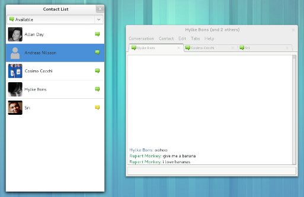
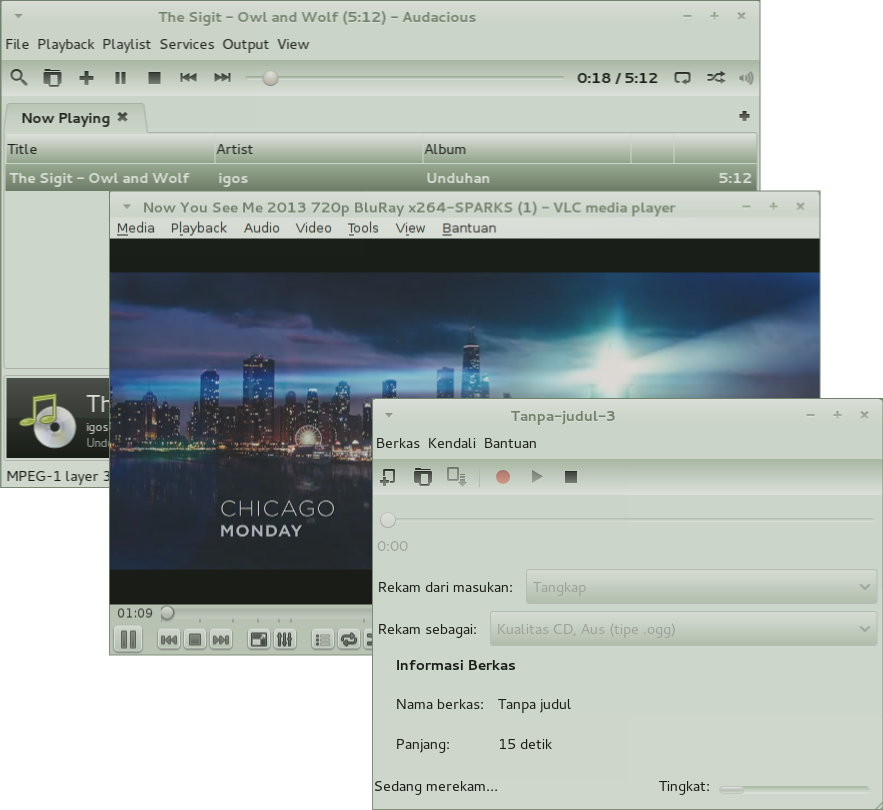
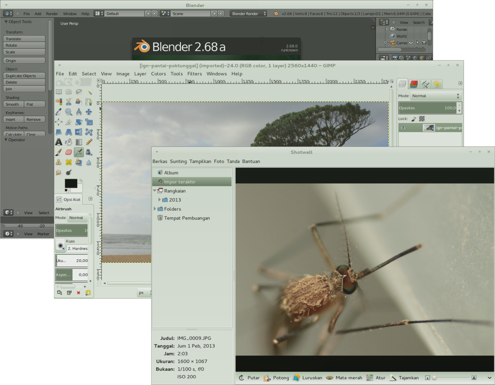

Selamat datang di IGOS Nusantara. Kami akan memandu Anda untuk mulai berkenalan dengan
fitur-fitur yang tersedia di sistem operasi ini.
Klik Mulai untuk memulai tur.
Ikhtisar
IGOS Nusantara disingkat IGN adalah sistem operasi open source
yang memakai kernel Linux.
IGN mulai dikembangkan tahun 2006 ditandai
dengan peluncuran IGN2006. Setiap tahun IGN secara teratur diluncurkan.
IGN 100% gratis untuk Anda nikmati dan bagikan.
Keunggulan IGN
Beberapa alasan mengapa harus memakai IGOS Nusantara adalah :
100% free dan opensource
Ribuan aplikasi gratis
Bebas Virus dan Spyware
OS yang luar biasa powerfull
Kolaborasi
Klik. Terhubung.
Beberapa fasilitas pendukung dalam berbagi di IGN:
Surel Evolution, Kalender dan lainnya
Empathy Chat Video dan Teks
Berbagi Berkas Pribadi
Gwibber Tweets dan Dents
Remote Desktop

Hiburan dan Media
Mainkan Semuanya.
Dalam bidang hiburan dan media, IGN menyediakan:
Pemutar Video Totem
Pemutar Musik dan Podcast Rhythmbox
Perekam Suara
Pengekstrak CD Sound Juicer
Pembuat CD/DVD
Stan Foto Cheese
Pengatur Foto Shotwell

Kreativitas
IGN Menyediakan untuk mengakomodasi bakat anda :
Penyunting Gambar Gimp
Penyunting Grafis Vektor Inkscape
Scribus
Simple Scan
Blender 3D Studio
Buku Sketsa Digital MyPaint
Penyunting Video PiTiVi
Penyunting Suara Audacity

Perkantoran
Office. Redesigned.
Tetap produktif dengan aplikasi khas perkantoran yang didesain ulang oleh IGN.